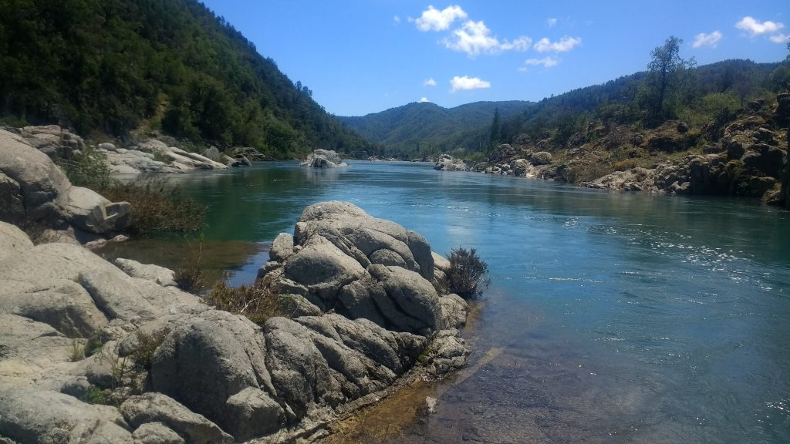
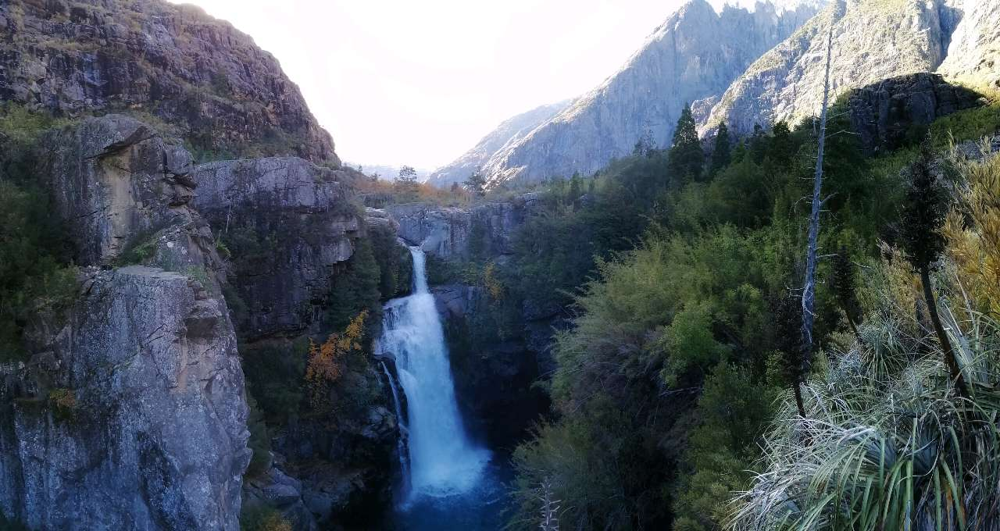

Nuestro servicio
¿Qué aprendemos?
- ¿Qué es el guiado turistico?
- ¿Qué es la atención al cliente?
- ¿Qué es la promoción turística?
El guiado turistico es una actividad que consiste en acompañar a los turistas durante su visita a un lugar, brindándoles información sobre la historia, cultura, tradiciones y atractivos turísticos del lugar. El objetivo del guiado turistico es proporcionar a los turistas una experiencia enriquecedora y educativa, permitiéndoles conocer mejor el destino que están visitando.
La atención al cliente es un servicio que se ofrece a los clientes para ayudarlos con sus dudas, problemas o solicitudes. En el contexto del turismo, la atención al cliente puede incluir asistencia en la planificación de viajes, resolución de problemas durante el viaje, y proporcionar información sobre los destinos turísticos.
La promoción turística es un conjunto de actividades destinadas a difundir y comercializar un destino turístico, con el objetivo de atraer más visitantes y aumentar el volumen de turismo en una región.
Portafolio
En esta sección se muestra una galería de imágenes de los destinos turísticos que podrías visitar con la guía de tus maestros. Cada imagen representa un lugar diferente, con su propia historia y cultura que tambien vas a aprender. A través de estas imágenes, queremos compartir la belleza y diversidad de los destinos turísticos que hay en nuestra hermosa región.
Destino 1: Río Achibueno

Destino 2: Cascadas las animas

Destino 3: Embalse ancoa
¿quieres postular a esta especialidad?
Si estás interesado en aprender más sobre turismo y guía, ¡no dudes en postularte!
En esta especialidad encontraras bastantes lugares encantadores y conoceras las historias detras de ellos, pero también deberas aprender sobre todo lo que la especialidad implica: Ingles, Cultura, Historia, hasta gestión de empresas (turisticas)